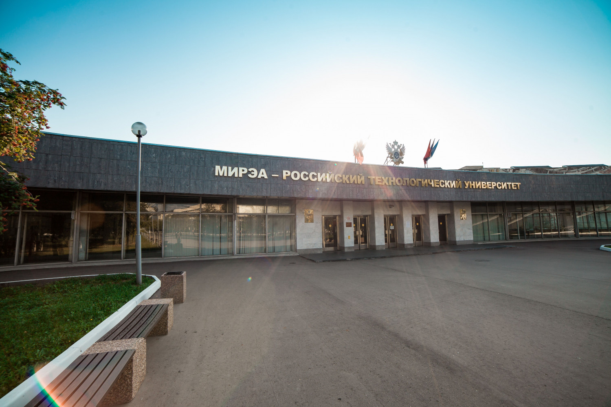

Московский государственный институт радиотехники, электроники и автоматики (технический университет)
Московский государственный институт радиотехники, электроники и автоматики (технический университет)
МИРЭА
РТУ МИРЭА (полное название Федеральное государственное бюджетное образовательное учреждение высшего образования «МИРЭА — Российский технологический университет») — высшее учебное заведение в Москве, которое образовано в 2015 году в результате объединения МИРЭА, МГУПИ, МИТХТ имени М. В. Ломоносова и ряда образовательных, научных, конструкторских и производственных организаций.
ВЗЭИ являлся головным институтом в системе заочного образования по энергетическим и радиотехническим специальностям, готовил инженеров для оборонной промышленности и многих новых отраслей энергетики. Его филиалы и учебно-консультационные пункты стали основой для создаваемых позднее технических вузов в Омске, Кемерово, Кирове и ряде других городов.
В начале 60-х годов для расширения подготовки специалистов по радиоэлектронике и электронной технике ВЗЭИ реформировался, переходя от преимущественно энергетического направления вуза к наукоемким технологиям.
В рамках подготовки к преобразованию в учебное заведение нового типа контингент студентов теплоэнергетического, гидроэнергетического, электроэнергетического и электромеханического факультетов передается в Московский энергетический институт.
Наряду с сохранением существовавшего с начала деятельности ВЗЭИ радиотехнического факультета начали функционировать факультеты:
Масштабная модернизация ВЗЭИ стала осуществляться после того, как 19 декабря 1964 года ректором института был назначен крупный организатор высшего образования и науки Н. Н. Евтихиев — будущий академик АН СССР, Герой Социалистического Труда, кавалер шести орденов СССР и России.
В последующие годы осуществлялось преобразование ВЗЭИ в высшее учебное заведение для подготовки инженерных кадров для предприятий оборонной промышленности г. Москвы по начавшим бурно развиваться в те годы направлениям: радиотехника, электроника, кибернетика, вычислительная техника.
Так, в процессе деятельности ВЗЭИ стал определяться современный профиль вуза, начали складываться структура, преподавательский состав, традиции подготовки высококвалифицированных специалистов для развития новых технологий в радиотехнике, электронике и вычислительной технике. За 20 лет существования Всесоюзным заочным энергетическим институтом было подготовлено 7 тысяч инженеров.
Ректором МИРЭА назначен Николай Николаевич Евтихиев.
МИРЭА в начале деятельности не имел ни одного метра своей площади. Изначально институт базировался в одном из корпусов Московского энергетического института, по адресу улица Красноказарменная, 14.
В 1968 году под учебный корпус было переоборудовано здание на Наличной улице, д. 5, общей площадью 2130 м². Постепенно учебные площади расширялись. В 1970 году построено здание на 5-й улице Соколиной Горы, 20.
Одновременно развертывается строительство современного учебно-научного комплекса общей площадью 100 000 кв. м. на Юго-Западе Москвы, на Боровском шоссе около деревни Никулино. Строительством занималось СУ-210 Спецстроя.
В 1976 году первым введен в строй корпус Б. Здесь размещались ректорат и деканаты (ныне факультет РТС). Занятия всех факультетов в здании на проспекте Вернадского, 78 в корпусе А начались в 1978/1979 учебном году. Строительство здания МИРЭА завершилось в 1980-е годы. Учебные площади института разместились в 6-ти корпусах.
Комплекс зданий включает также информационно-вычислительный центр и научно-техническую библиотеку.
За 1967—1992 годы выпуск специалистов составил 44 897 чел., в том числе:
В 1994 году МИРЭА прошёл государственное лицензирование и аккредитацию как университет.
В 1998 году конференцией педагогических, научных и других категорий работников и обучающихся в МИРЭА ректором МИРЭА избран декан факультета электроники, доктор физико-математических наук, профессор Александр Сергеевич Сигов. В 2003 году А. С. Сигов вновь был избран ректором университета сроком на 5 лет. В 2008 году состоялось очередное переизбрание на пятилетний срок.
В июне 2013 года новым ректором института стал доктор технических наук, профессор Кудж Станислав Алексеевич. Назначение спровоцировало скандал, освещенный в Интернет-СМИ. Там, в частности, утверждалось, что преждевременное отстранение от должности ректора А. С. Сигова напоминало рейдерский захват. В связи с этими событиями депутатом Госдумы В. Бурматовым был направлен запрос в прокуратору о проверке законности назначения С. А. Куджа ректором МИРЭА.
Приказом Минобрнауки РФ от 9 июня 2014 года к МГТУ МИРЭА были присоединены Московский государственный университет приборостроения и информатики (МГУПИ) и Институт профессионального администрирования и комплексной энергоэффективности (ИПАиКЭ) со всеми их филиалами. Объединенный университет получил название Московский государственный университет информационных технологий, радиотехники и электроники, но сохранил аббревиатуру от предшественников — МИРЭА, МГУПИ.
30 апреля 2015 года ТАСС сообщило, что приблизительно 12 мая Министерство образования РФ издаст приказ, объединяющий «Московский государственный университет информационных технологий радиотехники и электроники» (МИРЭА, МГУПИ) и «Московский государственный университет тонких химических технологий имени М. В. Ломоносова» (МИТХТ) в «Российский технологический университет имени Ломоносова» (РТУ им. Ломоносова).
27 мая 2015 года Министерство образования РФ опубликовало приказ о присоединении Московского государственного университета тонких химических технологий имени М. В. Ломоносова (МИТХТ) к Московскому государственному университету информационных технологий, радиотехники и электроники (МИРЭА, МГУПИ), а также о переименовании последнего в «Московский технологический университет».
17 июня 2015 года информация о переименовании в Московский технологический университет появилась на сайте университета.
История МИРЭА
С 1 сентября 1947 года начал работать Всесоюзный заочный энергетический институт (ВЗЭИ) подготовки и усовершенствования инженеров в Москве с филиалами в Ленинграде, Киеве, Баку, Ташкенте, Свердловске и Новосибирске.ВЗЭИ являлся головным институтом в системе заочного образования по энергетическим и радиотехническим специальностям, готовил инженеров для оборонной промышленности и многих новых отраслей энергетики. Его филиалы и учебно-консультационные пункты стали основой для создаваемых позднее технических вузов в Омске, Кемерово, Кирове и ряде других городов.
В начале 60-х годов для расширения подготовки специалистов по радиоэлектронике и электронной технике ВЗЭИ реформировался, переходя от преимущественно энергетического направления вуза к наукоемким технологиям.
В рамках подготовки к преобразованию в учебное заведение нового типа контингент студентов теплоэнергетического, гидроэнергетического, электроэнергетического и электромеханического факультетов передается в Московский энергетический институт.
Наряду с сохранением существовавшего с начала деятельности ВЗЭИ радиотехнического факультета начали функционировать факультеты:
- автоматики, телемеханики и измерительной техники;
- вычислительной техники;
- конструирования и производства радиоэлектронной аппаратуры.
Масштабная модернизация ВЗЭИ стала осуществляться после того, как 19 декабря 1964 года ректором института был назначен крупный организатор высшего образования и науки Н. Н. Евтихиев — будущий академик АН СССР, Герой Социалистического Труда, кавалер шести орденов СССР и России.
В последующие годы осуществлялось преобразование ВЗЭИ в высшее учебное заведение для подготовки инженерных кадров для предприятий оборонной промышленности г. Москвы по начавшим бурно развиваться в те годы направлениям: радиотехника, электроника, кибернетика, вычислительная техника.
Так, в процессе деятельности ВЗЭИ стал определяться современный профиль вуза, начали складываться структура, преподавательский состав, традиции подготовки высококвалифицированных специалистов для развития новых технологий в радиотехнике, электронике и вычислительной технике. За 20 лет существования Всесоюзным заочным энергетическим институтом было подготовлено 7 тысяч инженеров.
Преобразование ВЗЭИ в МИРЭА
Постановлением Правительства от 30 июня 1967 года Всесоюзный заочный энергетический институт (ВЗЭИ) преобразован в Московский институт радиотехники, электроники и автоматики (МИРЭА) в целях подготовки высококвалифицированных инженерных кадров для наукоемких отраслей электронной и радиопромышленности, машиностроения и приборостроения, средств автоматизации и систем управления.Ректором МИРЭА назначен Николай Николаевич Евтихиев.
МИРЭА в начале деятельности не имел ни одного метра своей площади. Изначально институт базировался в одном из корпусов Московского энергетического института, по адресу улица Красноказарменная, 14.
В 1968 году под учебный корпус было переоборудовано здание на Наличной улице, д. 5, общей площадью 2130 м². Постепенно учебные площади расширялись. В 1970 году построено здание на 5-й улице Соколиной Горы, 20.
Одновременно развертывается строительство современного учебно-научного комплекса общей площадью 100 000 кв. м. на Юго-Западе Москвы, на Боровском шоссе около деревни Никулино. Строительством занималось СУ-210 Спецстроя.
В 1976 году первым введен в строй корпус Б. Здесь размещались ректорат и деканаты (ныне факультет РТС). Занятия всех факультетов в здании на проспекте Вернадского, 78 в корпусе А начались в 1978/1979 учебном году. Строительство здания МИРЭА завершилось в 1980-е годы. Учебные площади института разместились в 6-ти корпусах.
Комплекс зданий включает также информационно-вычислительный центр и научно-техническую библиотеку.
Получение статуса технического университета
В соответствии с Постановлением Совета Министров — Правительства Российской Федерации от 16 июня 1993 года и приказом Государственного комитета Российской Федерации по высшему образованию от 22 ноября 1993 года Московский институт радиотехники, электроники и автоматики получает статус технического университета, что свидетельствует об общероссийском и международном признании высокого уровня подготовки кадров для наукоемких отраслей промышленности с учётом кардинальных изменений в стране.За 1967—1992 годы выпуск специалистов составил 44 897 чел., в том числе:
- по очной форме обучения — 9195 чел.
- очно-заочной — 19 248 чел.
- заочной — 16 454 чел.
В 1994 году МИРЭА прошёл государственное лицензирование и аккредитацию как университет.
В 1998 году конференцией педагогических, научных и других категорий работников и обучающихся в МИРЭА ректором МИРЭА избран декан факультета электроники, доктор физико-математических наук, профессор Александр Сергеевич Сигов. В 2003 году А. С. Сигов вновь был избран ректором университета сроком на 5 лет. В 2008 году состоялось очередное переизбрание на пятилетний срок.
В июне 2013 года новым ректором института стал доктор технических наук, профессор Кудж Станислав Алексеевич. Назначение спровоцировало скандал, освещенный в Интернет-СМИ. Там, в частности, утверждалось, что преждевременное отстранение от должности ректора А. С. Сигова напоминало рейдерский захват. В связи с этими событиями депутатом Госдумы В. Бурматовым был направлен запрос в прокуратору о проверке законности назначения С. А. Куджа ректором МИРЭА.
Присоединение РосНИИ ИТиАП, ВНИИТЭ, МГУПИ, ИПАиКЭ и МИТХТ
14 июня 2013 года приказом Министерства образования и науки Российской Федерации от № 461 к Университету в качестве структурных подразделений присоединились Российский научно-исследовательский институт информационных технологий и систем автоматизированного проектирования (ФГБУ РосНИИ ИТиАП) и Всероссийский научно-исследовательский институт технической эстетики (ВНИИТЭ).Приказом Минобрнауки РФ от 9 июня 2014 года к МГТУ МИРЭА были присоединены Московский государственный университет приборостроения и информатики (МГУПИ) и Институт профессионального администрирования и комплексной энергоэффективности (ИПАиКЭ) со всеми их филиалами. Объединенный университет получил название Московский государственный университет информационных технологий, радиотехники и электроники, но сохранил аббревиатуру от предшественников — МИРЭА, МГУПИ.
30 апреля 2015 года ТАСС сообщило, что приблизительно 12 мая Министерство образования РФ издаст приказ, объединяющий «Московский государственный университет информационных технологий радиотехники и электроники» (МИРЭА, МГУПИ) и «Московский государственный университет тонких химических технологий имени М. В. Ломоносова» (МИТХТ) в «Российский технологический университет имени Ломоносова» (РТУ им. Ломоносова).
27 мая 2015 года Министерство образования РФ опубликовало приказ о присоединении Московского государственного университета тонких химических технологий имени М. В. Ломоносова (МИТХТ) к Московскому государственному университету информационных технологий, радиотехники и электроники (МИРЭА, МГУПИ), а также о переименовании последнего в «Московский технологический университет».
17 июня 2015 года информация о переименовании в Московский технологический университет появилась на сайте университета.